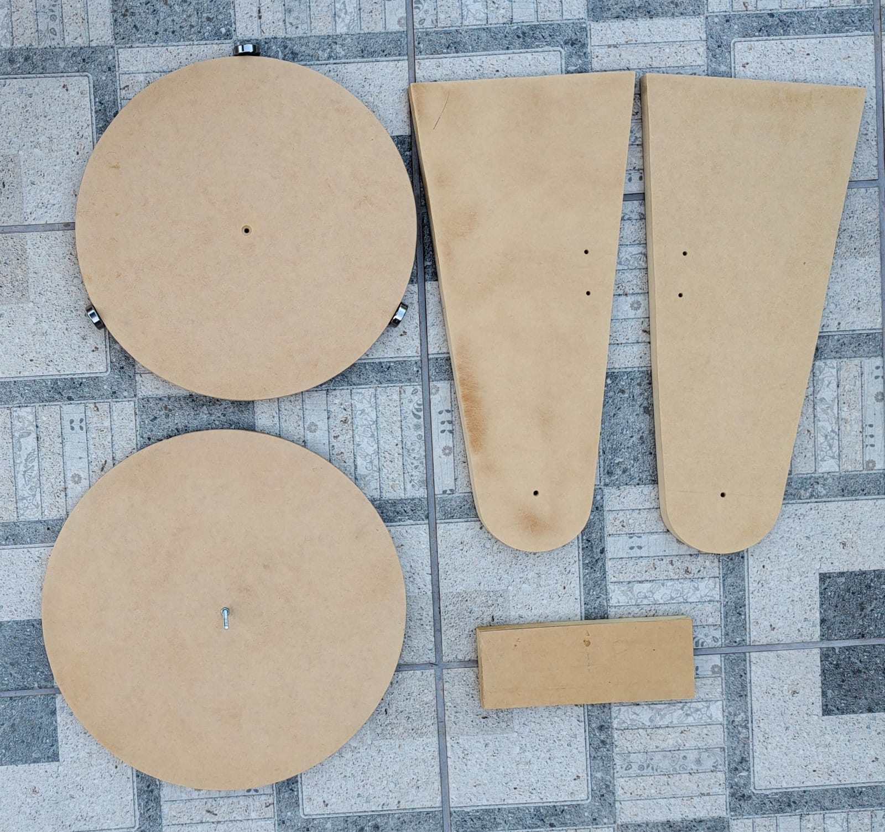

A montagem Dobsoniana é uma maneira especial de suportar telescópios para observar o céu. Ela foi criada por John Dobson nos anos 60. É uma montagem simples que permite que o telescópio se mova facilmente para cima, para baixo e para os lados, tornando a observação do céu mais acessível e econômica para os astrônomos amadores. É frequentemente usada em projetos de telescópios de grande abertura, o que torna a observação de objetos no espaço mais brilhante e detalhada.

Para realizar esta etapa do projeto foram utilizadas 4 chapas de MDF 15mm 80x40 cm. As chapas foram cortadas com uma tupia, utilizando fresas para madeira.
Utilizar a tupia permite um corte circular para as extremidades superiores da estrutura e base para fixação
Abaixo estão os cortes necessários para a montagem.
 Chapas cortadasPara que os eixos possuam mobilidade suficiente e girar livremente foram utilizados rolamentos no o eixo horizontal e uma barra roscada para o eixo vertical.
A seguir, seguem as imagens do processo de montagem